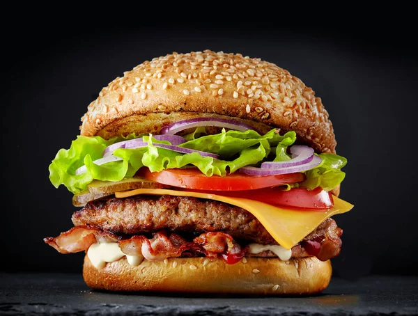

Burger
Return

Ingredients
- 1 lb (450g) ground beef (or chicken/turkey)
- 1 teaspoon salt
- ½ teaspoon black pepper
- ½ teaspoon garlic powder (optional)
- 4 burger buns
- 4 slices of cheese (cheddar or your choice)
- Lettuce, tomato, onion (optional toppings)
- Ketchup, mayo, mustard (optional sauces)
How to prepare a burger
- Prepare the patties – In a bowl, mix ground beef with salt, pepper, and garlic powder. Shape into 4 even patties.
- Cook the patties – Heat a pan or grill over medium-high heat. Cook patties for about 3-4 minutes per side (or until fully cooked). Add cheese on top during the last minute.
- Toast the buns – Lightly toast burger buns on the pan or grill for 1-2 minutes until golden.
- Assemble the burger – Place the patty on the bottom bun, add lettuce, tomato, onion, and your favorite sauces.
- Serve and enjoy – Place the top bun, press lightly, and serve your homemade burger with fries or salad! 🍔😋